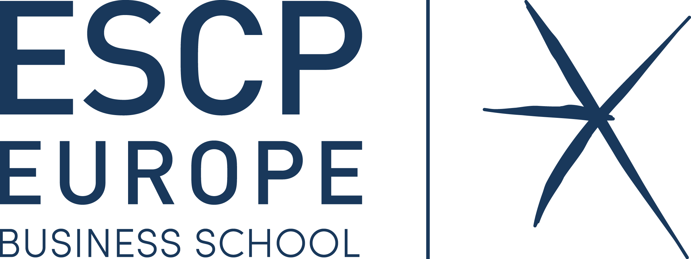

🤓 Hello world, I'm Tristan 🧐
Je suis passionné par l'automobile 🏎 et l'horlogerie ⌚️. J'ai co-fondé l'Association Défis Sorbonne qui soutient tout étudiant universitaire porteur de projet pour l'organiser et le lancer.
Pssst ... en ce moment avec ma promo on fait des Tote Bag Ananas trop, va voir notre landing 😉
MonAnanasEntrepreneur
Étudiant du Master Spécialisé Innover & Entreprendre de l'ESCP Europe, avec ma promotion on va créer de nouvelles entreprise trop sympa où tout le monde voudra bosser parce qu'on voudra sauver le monde en rigolant ... et ouais ! Sans blague on va rendre notre directeur Éric trop fier parce qu'on aura que des licornes dans la promo. (drop the mike 🎤)
Ingénieur
Ingénieur spécialisé sur les dispositifs médicaux 🏥 issue de Sorbonne Université, j'ai travaillé aussi bien sur les différentes technologies et systèmes actuels que sur la règlementation. J'ai suivi dans mon cursus une 5ème année de médecine, et me suis particulièrement intéressé à la neurochirurgie. J'ai eu plusieurs expériences professionnelles dans le secteur que ce soit dans le développement d'outils numériques à l'hopital, ou encore ingénieur qualité dans le laboratoire de contrôle des équipements de radiothérapie français, ou encore en tant que gérant d'une entreprise de dispositifs médicaux orthopédiques innovants, et aussi j'ai participé au groupe de travail du syndicat des entreprises des dispositifs médicaux pour que le gouvernement comprenne les enjeux de ce secteur.
Sportif
Je suis aussi sportif à mes heures perdues. J'ai été professionnel en voile ⛵️ et en équitation 🏇 et participé à des compétions nationnale et internationale 🏆 🥇 🥈 🥉. Aujourd'hui je suis amateur en natation 🏊♂️ course à pieds 🏃♂️ golf 🏌️♂️ et surf🏄♂️.
La bise, 🖖
Longue vie, et prospérité !